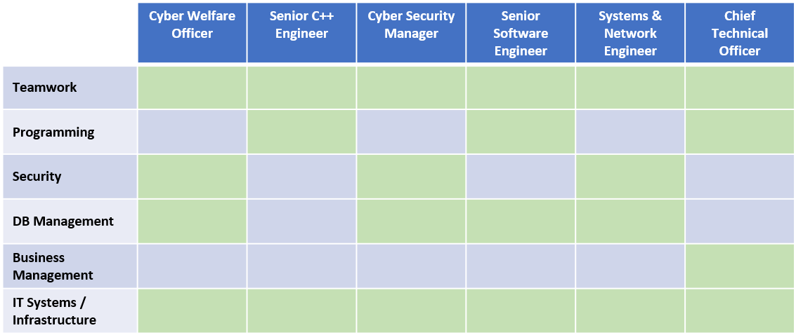

Ideal Jobs
Imagine Dragoons Ideal Jobs Breakdown
Imagine Dragoons Ideal Jobs Breakdown
Compare and contrast ideal jobs
The ideal jobs that were identified by each member of Imagine Dragoons although varying somewhat have a number of key high-level skills and knowledge required that is common across all 6 of these examples. The Information Technology field provides quite a large number of job opportunities across various skillsets; however, most have some key fundamental traits which are highlighted when comparing the different ideal job roles that have been selected by each group member.
Ideal Jobs
- Ty Lynch: Senior C++ Engineer (Video Games)
- Benjamin King: Cyber Warfare Officer (CWO) in RAAF
- Douglas Baker: Systems and Network Engineer
- Morgan Cassar: Cyber Security Manager
- Ryan Williams: Senior Software Engineer
- Robbie Cross: Chief Technical Officer
Roles that are primarily programming focused (Senior C++ Engineer and Senior Software Engineer) both require extensive knowledge in a programming language to be considered. However, the similarities are only common at a high level as one role will require Java expertise whilst the other will need to applicant to be proficient in C++ and Python. Both roles also take key criteria from some of the other roles including database management and information systems knowledge.
The issue of IT security heavily defines the requirements for both the Cyber Warfare Officer and Cyber Security Manager roles outlined above. Defining and maintaining security procedures and benchmarks across information technology platforms is key criteria – however although seemingly similar both roles are in quite different businesses. Working in an Air Force position for the military is quite unique in the group of roles provided by team which only highlights the extensive need for IT positions across a multitude of companies and industries.
The Systems & Network Engineer role provides an opportunity to work with a growing IT infrastructure and provide the autonomy to improve various aspects as well as work with a wider team to assign tasks and responsibilities to these team members.
Finally, a more business/organisational role is relevant for the Chief Technical Officer role which requires a focus on an overall IT roadmap for a business and setting (and meeting) organisation role. This role will require some knowledge across a range of IT skills including a mix of technical (programming) and managerial (company roadmaps).
Key Differentiation
There are some key differentiation between the selection of jobs when contrasting all 6 roles, but generally we can break them down into the following areas:
- Security, Systems and Networking
- Programming/Software Development
- Business/Organisational
The range of ideal roles provided by the team both from a technical and IT standpoint as well as the assortment of companies and industries that these roles are available in provide a glimpse of the impact and importance of robust and innovative information technology systems in the job market. This is only a small sample size of hundred of IT jobs available in Australia over the last few weeks, comparatively these roles may seem similar in regards to accreditation and expertise required – however upon a deeper dive it is clear that even roles across similar areas (as outlined above) have quite different responsibilities.
Common Elements
As already outlined each ideal job does vary significantly across required skills and background required as well as individual industries and business. However, all being in the IT sector there are some common elements that can be attributed to all the roles listed.
From a high-level perspective I’ve identified some key traits or requirements that are either shared across multiple or all roles – keep in mind this is based on the feedback from each team member and the individual job applications. Below is a graph that shows some of the key areas of each role and how they apply to each:
A common theme across all job descriptions is the ability to be able to work in a team – this is regardless of the company and detailed job description. This is possibly a skill that is overlooked in the IT sector with a lot of focus generally being on the somewhat niche skills that may be required for a role, such as:
- Programming in a certain language (Java, C++)
- Being proficient on a certain database environment (MSSQL, Oracle)
- Maintaining a specific network environment (Windows, Unix)
It is clear from all the job roles provided that the ability to work in teams is highly sought after – and perhaps could be defined as an absolute requirement.
Another fundamental requirement is also knowledge of IT systems and infrastructure – applicants for all these IT roles (and unassumingly IT roles in general) are expected to have experience and knowledge of a range of IT systems and to have been exposed to various IT infrastructures in order to be a successful applicant.
How similar or different are career plans for group?
Generally, the range of career paths for the group are quite diverse although as explored previously do share some fundamental skills that applicants would need.
- Software Development as a career plan for the Senior C++ Engineer and Senior Software Engineer roles
- A Cyber Security career path is a career plan envisioned for the Cyber Warfare Office and Cyber Security roles.
- IT Systems and Network management specialising in automation of tasks is related to the Systems and Network Engineer role
- An Organisational Management path would be defined as the career plan for the Chief Technical Officer Role.
All the positions that have been targeted as an ideal job are quite senior and would take some time to gain the relevant qualifications, certifications and experience in order to be a successful candidate. This means that the career path for most of these positions would start with a potential entry-level role such as a junior developer or support desk analyst. Becoming proficient then specialising in a certain area (IT Security for example) would then provide the opportunity to reach these career goals that have been outlined.
These roles that have been studied and provided by each team member are quite different when considering the day-to-day tasks and expectations for someone within these positions – which is encouraging and shows the diversification of roles and positions currently available in the IT sector. Taking this sample size of ideal jobs and therefore relevant areas of interest from each group member would result in a range of skills, knowledge and expertise that would be shared across multiple areas of a business or in this case a group project.